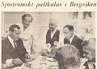
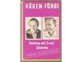

Ernst Almar Sjöström
Journalist och författare. Blev 81 år.
| Född: | 1924-04-11 Bergviken 1:5, Burträsk sn. [1] | |
|---|
| Levde: | 1970 Oscars fs, Stockholms stad. [2] | |
|---|
| Levde: | 1980 Trängen 1, Oscar fs, Stockholms stad. [3] | |
|---|
| Död: | 2006-03-29 Gjuteribacken 20, Sundbyberg. [4] | Folkbokförd i Oscars fs, Stockholms stad. Änkling 1993-07-02. |
|---|
Noteringar
Hermodsstudier. Journalist på Aftonbladet i Stockholm och Arbetarbladet i Ockelbo. Redaktör. Författare.
Flera böcker skrev Ernst Sjöström tillsammans med sin bror advokaten Henning Sjöström,
Vägen förbi (1965) (tillsammans med brodern Henningt Sjöström)
Det glatta livet (1966) (tillsammans med Henning Sjöström
Så fortsatte vägen från byn (1968) tillsammans med Henning Sjöström)
Silverarken (1969) tillsammans med Henning Sjöström
Pigorna i byn (1976) tillsammans med Henningt Sjöström
Personhistoria
| Årtal | Ålder | Händelse |
|---|
| 1924 |
|
Födelse 1924-04-11 Bergviken 1:5, Burträsk sn [1] |
| 1930 |
6 år |
Modern Hedda Carolina (Lina) Lindmark Sjöström dör 1930-07-11 Bergviken 1:5, Burträsk sn [5] |
| 1954 |
30 år |
Brodern Knut Valdemar Sjöström dör 1954-08-18 Uppsala, Uppsala domkyrko fs, Uppsala stad [6] |
| 1955 |
30 år |
Fadern Johan Anton Sjöström dör 1955-03-07 Bergviken 1:5, Burträsk sn [7] |
| 1970 |
|
Levde 1970 Oscars fs, Stockholms stad [2] |
| 1980 |
|
Levde 1980 Trängen 1, Oscar fs, Stockholms stad [3] |
| 1981 |
56 år |
Brodern Johan (Janne) Gunnar Sjöström dör 1981-03-29 Lasarettsv 19, Skellefteå, Sankt Olovs fs, Skellefteå kn [8] |
| 1984 |
60 år |
Brodern Oskar Linus Sjöström dör 1984-06-21 Åkerv 13, Näsåker, Ådals-Lidens fs, Sollefteå kn [9] |
| 1988 |
63 år |
Brodern Olof Sigvard Sjöström dör 1988-01-16 Nyg 56, Skellefteå, Sankt Olovs fs, Skellefteå kn [10] |
| 1998 |
74 år |
Brodern Petrus Birger Sjöström dör 1998-08-05 Skeppsholmsv 30, Sigtuna, Sankt Olofs fs, Sigtuna kn [11] |
| 2006 |
81 år |
Brodern Otto Ingvar Sjöström dör 2006-03-18 Gröntuv 268, Gagnef, Gagnef fs, Gagnef kn [4] |
| 2006 |
81 år |
Död 2006-03-29 Gjuteribacken 20, Sundbyberg [4] |
Dokument
Källor
| [1] | Burträsk AIIA:2B (1911-1925) fol. 661 k.7/7 |
| |
| | |
| [2] | Mtl Stockholms stad och län 1971 |
| |
| | |
| [3] | Mtl Stockholm län 1981 |
| |
| | |
| [4] | FK 09 / man91 |
| |
| | |
| [5] | NV - Dödsannonsregistrering 1930-07-15 |
| |
| | |
| [6] | AL, DB, PA / DOR 52-60 |
| |
| | |
| [7] | DB/DOR 52-60, NV - Dödsannonsregistrering 1955-03-22 |
| |
| | |
| [8] | RTB 81 / SPAR 90 |
| |
| | |
| [9] | RTB 84 / SPAR 90 |
| |
| | |
| [10] | RTB 88 / SPAR 90 |
| |
| | |
| [11] | RTB 98 / SPAR 92f |
| |
|
|  |
1965-09-14. "Bröderna Henning (vä) och Ernst (hö) Sjöström har "drabbat" sin hembygd igen för att bl. a. signera sin senaste bok i Burträsk och Skellefteå och naturligtvis för att äta palt hos moster Maria och morbror Gustav Nyström i Bergviken, där dessa bilder blev tagna. Härovan författarbröderna med morbror och moster vid paltbordet. Bilden
under efter lyckligt avslutad provtur i Henning Sjöströms Rolls Royce, som inte minst de yngre släktingarna högeligen uppskattade".
Norra Västerbotten
|
| |
|  |
| 1965. Författarbröderna Henning och Ernst Sjöström. |
|
{kind=link}
{kind=link}